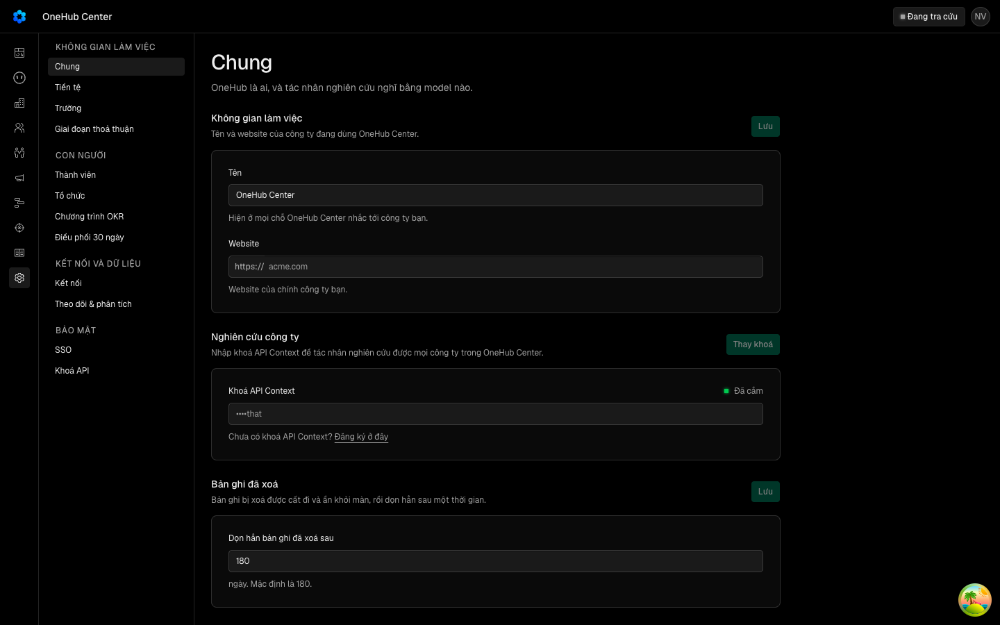
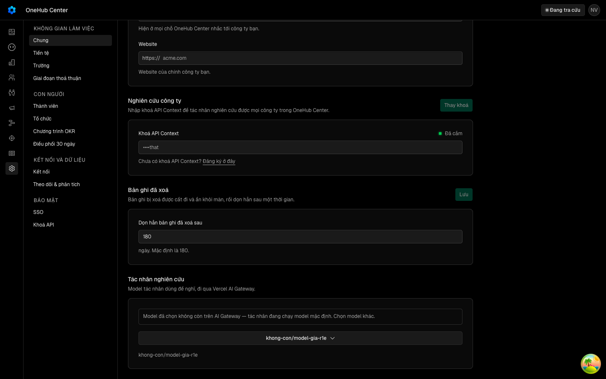
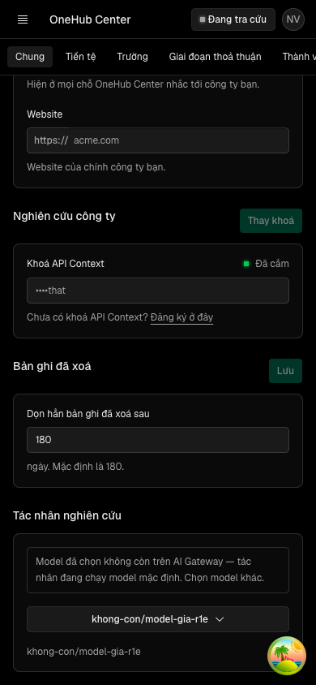
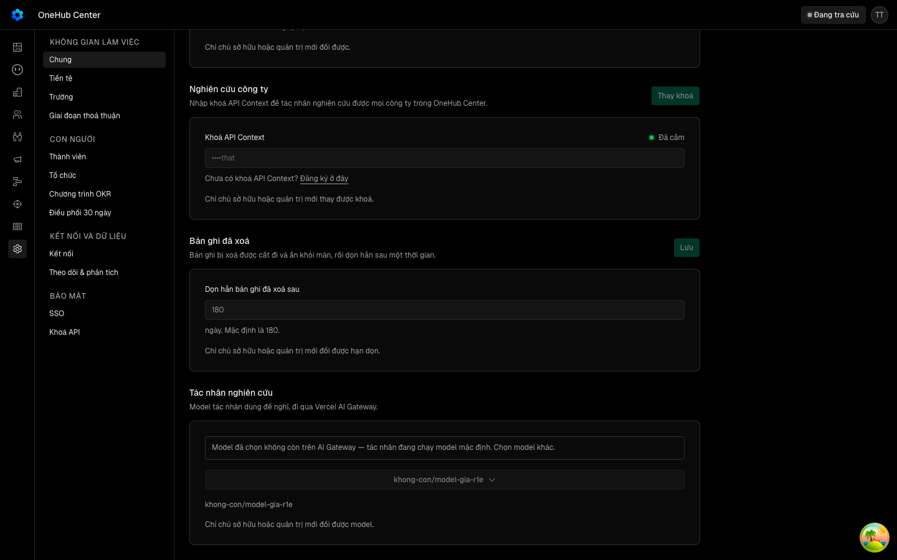
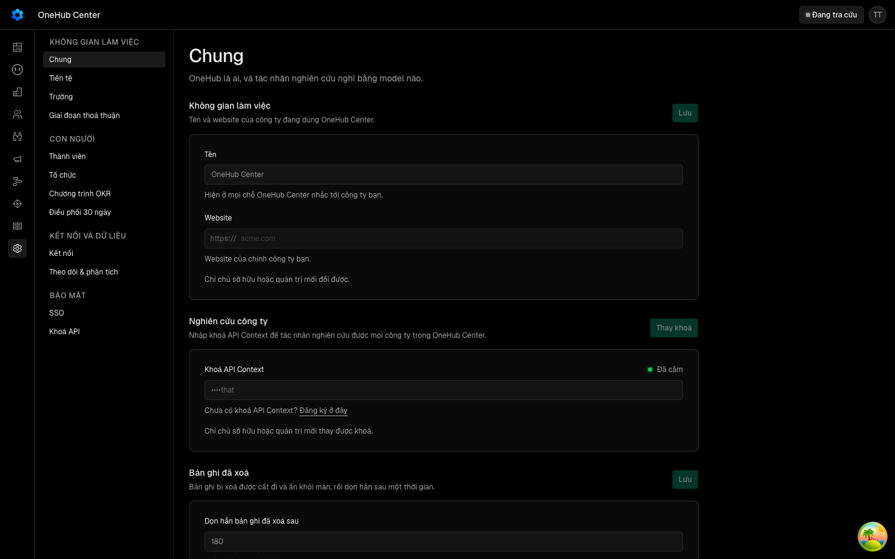
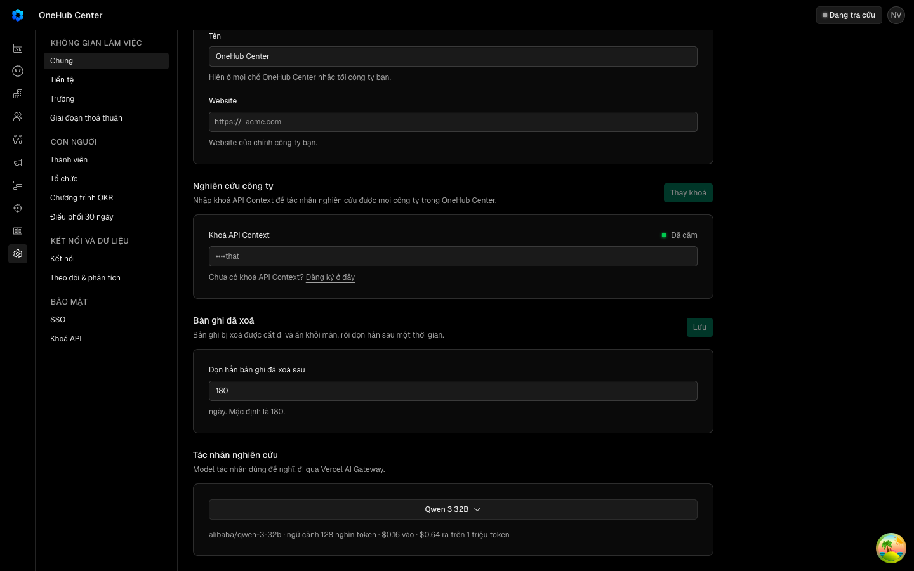

«Thành viên thường không nhờ chat sửa trường của cả đội; model bị gỡ thì chat lùi về mặc định và báo quản trị»
Các eval
| Eval | Tiêu chí | Loại | Verdict | run_id | verified_at |
|---|---|---|---|---|---|
| E1 | AC-1 | test | PASS | minted-chat-an-toan-truoc-r1-E1-r3 | 2026-10-05T05:08:49Z |
| E2 | AC-2 | test | PASS | muusi6ke7wnm | 2026-10-05T05:08:49Z |
| E3 | AC-3 | test | PASS | minted-chat-an-toan-truoc-r1-E3-r3 | 2026-10-05T05:08:49Z |
| E4 | AC-4 | test | PASS | minted-chat-an-toan-truoc-r1-E4-r3 | 2026-10-05T05:08:49Z |
| E5 | AC-5 | test | PASS | muusi5buyycb | 2026-10-05T05:08:49Z |
| E6 | AC-6 | test | PASS | minted-chat-an-toan-truoc-r1-E6-r3 | 2026-10-05T05:08:49Z |
| E7 | AC-7 | test | PASS | minted-chat-an-toan-truoc-r1-E7-r3 | 2026-10-05T05:08:49Z |
| E8 | AC-8 | test | PASS | minted-chat-an-toan-truoc-r1-E8-r3 | 2026-10-05T05:08:49Z |
| E9u | AC-9 | ui-check | PASS | minted-chat-an-toan-truoc-r1-E9u-r3 | 2026-10-05T05:08:49Z |
| E10 | AC-10 | test | PASS | minted-chat-an-toan-truoc-r1-E10-r3 | 2026-10-05T05:08:49Z |
| E11 | AC-11 | test | PASS | minted-chat-an-toan-truoc-r1-E11-r3 | 2026-10-05T05:08:49Z |
Chi tiết từng eval
PASS E1 · test
AC-1: Given một phiên chat của người đăng nhập (`authenticator` `crm-app`) với vai `owner`, `admin`, `member`, `okr` hoặc không phải thành viên workspace, When người đó nhờ chat chạy `manage_fields` `create` và `manage_fields` `update-brief` (kể cả `agentFilled: false`), Then với `owner`/`admin` trường được tạo / đổi như hôm nay; với ba vai còn lại công cụ trả `created`/`updated` `false` kèm đúng câu `FIELDS_AGENT.tuChoi` và không hàng `fieldDefinition` nào được tạo hay đổi. (cross-layer)
bun test test/chat-an-toan-truong.integration.spec.ts -t ca-truong-tao test-run: dropped crm_muusi50dkj8i_test
PASS E2 · test
AC-2: Given cùng năm vai ở AC-1, When chat chạy `archive_field` trên một trường đang dùng (sau khi lời duyệt của người được chấp nhận), Then với `owner`/`admin` trường được lưu trữ như hôm nay; với ba vai còn lại công cụ trả `archived` `false` kèm câu `FIELDS_AGENT.tuChoi` và `archivedAt` của trường vẫn rỗng. (cross-layer)
bun test test/chat-an-toan-truong.integration.spec.ts -t ca-truong-luu-tru test-run: dropped crm_muusi6ke7wnm_test
PASS E3 · test
AC-3: Given một phiên không có người — lượt dispatch nền (`APP_AUTH`) hoặc lượt Tác nhân (purpose `team-agent`) — When phiên đó chạy `manage_fields` (`create`, `update-brief`) hoặc `archive_field`, Then cả ba bị từ chối với câu `FIELDS_AGENT.tuChoi` và không hàng `fieldDefinition` nào đổi.
bun test test/chat-an-toan-truong.integration.spec.ts -t ca-truong-phien-may test-run: dropped crm_muusi545fxjl_test
PASS E4 · test
AC-4: Given năm giá trị vai `owner`, `admin`, `member`, `okr` và `null`, When so luật vai mà agent dùng (`laQuanTriWorkspace` của `@crm/validation/vai-workspace`) với luật API dùng cho màn Trường (`canManageFields` của `@crm/auth`), Then hai hàm trả cùng kết quả trên cả năm giá trị.
bun test test/luat-vai-truong-trung.spec.ts Ran 1 test across 1 file. [234.00ms]
PASS E5 · test
AC-5: Given mỗi lần chạy `manage_fields` hoặc `archive_field` ở AC-1, AC-2, AC-3, When công cụ làm hoặc từ chối, Then có đúng một hàng `AgentEvent` loại `truong.doi-qua-chat` của phiên đó, mang `hanhDong`, `vai` (một trong `owner`, `admin`, `member`, `okr`, `khong-thanh-vien`, `tu-dong`), `ketQua` `lam`/`tu-choi` đúng với điều đã xảy ra; và `rang/dem-doi-truong.ts` đọc các hàng đó in đúng số lần làm theo vai, số lần từ chối, số lần một vai không phải `owner`/`admin` đã làm (ngưỡng chết), cùng số hàng `model.bi-go-lui` và `model.khong-tim-thay` (AC-6, AC-11), không ghi hàng nào.
bun test test/chat-an-toan-truong.integration.spec.ts -t ca-truong-su-kien bun test _acceptance/chat-an-toan-truoc-r1/rang/dem-doi-truong.spec.ts test-run: dropped crm_muusi5buyycb_test
PASS E6 · test
AC-6: Given model trợ lý đã chọn khác mặc định, When `modelTheoVai` chọn model cho phiên (cả vai `tro-ly` lẫn `tac-nhan`, và `modelChoLuot` ghim cho lượt Tác nhân) với danh mục Gateway (a) có id đó, (b) đọc được mà không có id đó, (c) không đọc được (lỗi mạng, mã HTTP lỗi, thân không phải danh mục), và (d) là thân phản hồi thật của Gateway đã ghi lại (có ngày và nguồn), Then (a) trả model đã chọn; (b) trả `null` để eve lùi về `DEFAULT_AGENT_MODEL`, và ghi đúng một `AgentEvent` loại `model.bi-go-lui` mang id đó cho mỗi id mỗi tiến trình; (c) trả model đã chọn; (d) bộ đọc nhận đủ id của thân thật và trả model đã chọn khi id có trong đó. Bộ đọc danh mục của agent và của API dùng chung một schema ở `@crm/validation`.
bun test test/model-lui-mac-dinh.integration.spec.ts -t model-lui test-run: dropped crm_muusi4mrocf5_test
PASS E7 · test
AC-7: Given danh mục Gateway đã đọc một lần, When `modelTheoVai` chạy lại trong `MODEL_DANH_MUC.ttlMs` (5 phút), Then không gọi Gateway lần nữa; quá `ttlMs` thì gọi lại; lời gọi Gateway quá `MODEL_DANH_MUC.timeoutMs` tính là không đọc được.
bun test test/model-lui-mac-dinh.integration.spec.ts -t danh-muc test-run: dropped crm_muusi7hen8ch_test
PASS E8 · test
AC-8: Given model đã chọn và danh mục Gateway, When API trả `settings.agentModel` cho một quản trị và cho một thành viên thường, Then `selectedMissing` là `true` khi có model đã chọn, danh mục đọc được và id không có trong đó; `false` khi id có trong danh mục, khi đang dùng mặc định, và khi danh mục không đọc được.
bun test test/cai-dat-model-bi-go.spec.ts test-run: dropped crm_muusi4961dx3_test
PASS E9u · ui-check
AC-9: Given màn Cài đặt › Model trợ lý thật trên bàn đo riêng của cây, When model đã chọn là một id Gateway không phục vụ, Then quản trị thấy hộp báo «model đã chọn không còn» ở khổ 1440 và 390, hộp không tràn ngang; thành viên thường cũng thấy hộp báo, còn ô chọn model của họ vẫn bị khoá kèm câu «chỉ chủ sở hữu hoặc quản trị đổi được» như hôm nay; và khi model đã chọn là một id Gateway có phục vụ thì hộp báo không hiện.








Chieu do: --chieu-do (id co trong danh muc o buoc 1) in 'buoc 1: khong thay hop bao', cac buoc 2-4 dat, phien-do ma 1 dung Expected; sau chieu do da chay lai lan xanh de anh la anh xanh. Assertion: B1 hop bao hien o 1440 (dat); B2 hop bao hien o 390 va khong tran ngang (dat); B3 member: hop bao hien, combobox disabled, cau quyen hien (dat); B4 owner voi id that: combobox co mat, trang hien ma model, khong hop bao (dat). Frame da luu: E9u-step1.png (r1e-bi-go-1440), E9u-step2.png (r1e-bi-go-390), E9u-step3.png (r1e-bi-go-member-1440), E9u-step4.png (r1e-con-1440). Network raw: evidence/E9u-network.txt (driver Playwright noi bo). Server phien do tu don, khong con cong nao nghe.
PASS E10 · test
AC-10: Given chữ mới của hộp báo và câu từ chối, When đọc bảng chữ hai ngôn ngữ, Then có đúng câu tiếng Việt và tiếng Anh đã khai và khoá được ghim ở `messages-guard`.
bun test test/messages-guard.spec.ts test/chu-model-bi-go.spec.ts bun test test/chat-an-toan-truong-chu.spec.ts Ran 1 test across 1 file. [91.00ms]
PASS E11 · test
AC-11: Given một lượt chat mà lời gọi model hỏng vì Gateway không tìm thấy model (`GatewayModelNotFoundError`), When eve phát `step.failed` cho lượt đó, Then có đúng một hàng `AgentEvent` loại `model.khong-tim-thay` của phiên đó mang id model; lỗi model khác (hết tín dụng, quá hạn mức) không ghi hàng này.
bun test test/model-lui-mac-dinh.integration.spec.ts -t khong-tim-thay
Eval không phân biệt (Analyst)
Vòng verify
- Round 1: 11/11 xanh nhung S4 giu 5 rejectFindings trong hop dong; bon phep do da duoc siet o commit 640416d79. Returned to implementation.
- Round 2: E6 BLOCKED, agent chay lenh model-lui bi skip/chet nen khong co ket qua; 10 eval con lai va 7 lenh suite xanh. Can chay lai E6, khong phai sua code.
- Round 3: 11/11 eval va 7 lenh suite xanh; REJECT vi phat hien trong hop dong con mo: t5 (AC-11, step.failed tinh lai model tu danh muc song, ghi sai model.bi-go-lui va modelId), t1 va t7 (AC-8, danh muc doc ra rong bi API coi la model bi go trong khi agent giu model da chon; E8 chi thu HTTP 503), t6 (AC-6, ghiBiGoLui danh dau da bao truoc khi ghi), t8 (AC-6, fixture danh muc la tap con tu chon), t2 (AC-9, hai anh r1e-bi-go-1440 va r1e-con-1440 giong het nhau, khong cho thay trang thai nao). Returned to implementation.